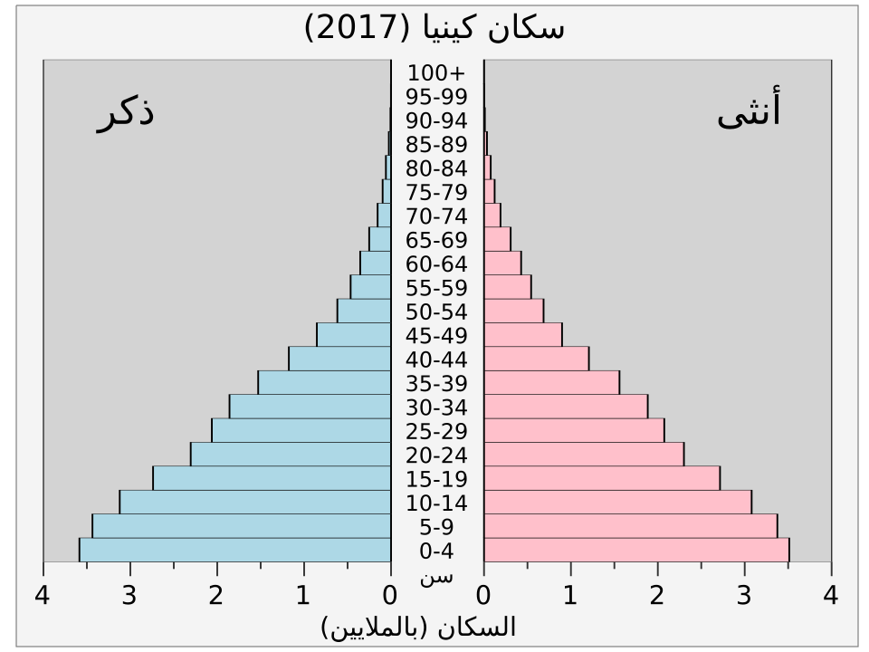
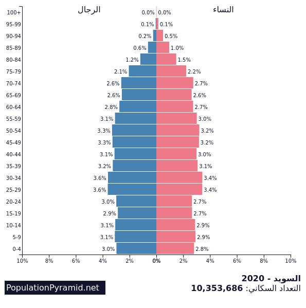
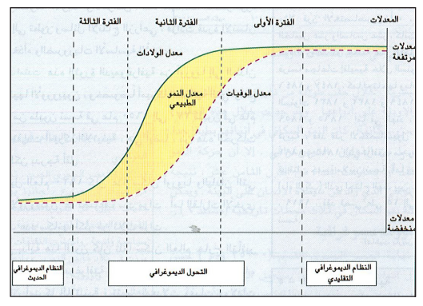
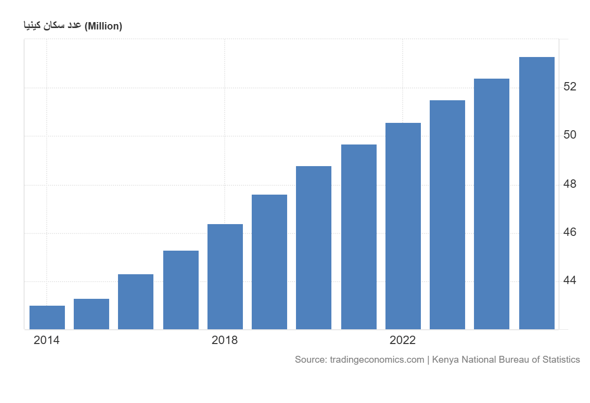
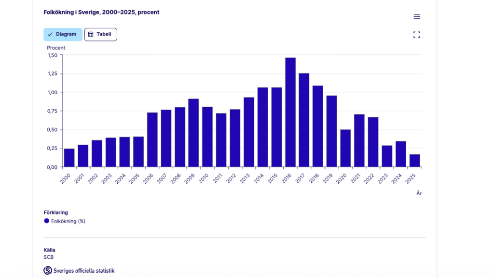
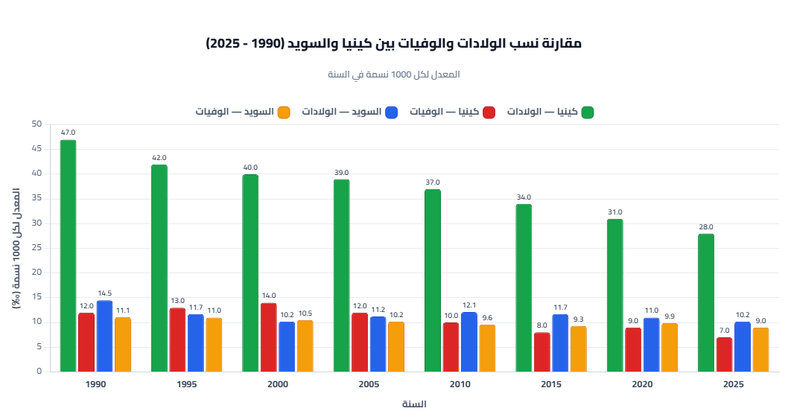

الحركية الديمغرافية للسكان
مقدمة
تهتمّ الحركية الديمغرافية بنمو السكان والعوامل المرتبطة به، وبتحرّكية السكان في المجال. ويُقصد بالحركية الديمغرافية مجموع التغيّرات التي تطرأ على عدد السكان وتركيبتهم بفعل الولادات والوفيات والهجرات، وهي تختلف من قطر إلى آخر حسب مرحلة الانتقال الديمغرافي التي يمرّ بها.
فما هي خصائص الحركية الديمغرافية بالعالمين النامي والمتقدم؟ وما هي أهمّ تيارات الهجرة العمالية وأسبابها وانعكاساتها؟
I خصائص الحركية الديمغرافية في العالم النامي والعالم المتقدم
1. كينيا مثال الأقطار النامية التي تعيش الانفجار الديمغرافي
أ. الانفجار السكاني وعوامله
يشهد عدد السكان في كينيا ارتفاعاً سريعاً، حيث تضاعف أكثر من 9 مرات خلال 70 سنة، إذ بلغ 54.7 مليون ساكن سنة 2020. وترتفع نسبة النمو الطبيعي إلى 2.2% سنة 2020.
عوامل الانفجار السكاني:
- ارتفاع نسبة الولادات إلى 27‰ سنة 2020 رغم تراجعها.
- ارتفاع معدل الخصوبة إلى أكثر من 3 أطفال/امرأة (3.4 طفل لكل امرأة في سن الإنجاب سنة 2020) رغم تراجعها.
- تراجع نسبة الوفيات.
- تعدّد الزواج والزواج في سنّ مبكر، وارتفاع نسبة الأمية ونسبة السكان الريفيين، وعدم اعتماد سياسة تحديد النسل إلا بصفة محتشمة ومتأخرة.
انعكاسات الانفجار الديمغرافي:
- تركيبة عمرية فتية (أو شابة) حيث تمثّل نسبة الأطفال دون 15 سنة 38% سنة 2020 وهو ما يفسّر القاعدة العريضة لهرم الأعمار، بينما لا تتجاوز نسبة الشيوخ 3% في نفس السنة وهو ما يفسّر القمة الحادة لهرم الأعمار.
- الرفع من نسبة الاستثمارات الديمغرافية والاجتماعية من صحة وتعليم… على حساب استثمارات التنمية.
وتتشارك في الخصائص الديمغرافية لكينيا تقريباً كلّ دول العالم النامي.
ب. السياسة السكانية في العالم النامي: مثال كينيا
لم تنتهج معظم دول العالم النامي سياسة سكانية واضحة للحدّ من النمو الديمغرافي، أو انتهجتها متأخرة ومحتشمة. ففي كينيا، لم تتبنّ الدولة سياسة تحديد النسل إلا في العقود الأخيرة وبصفة محدودة، بسبب العوامل الدينية والثقافية والاجتماعية وارتفاع نسبة الأمية، وهو ما ساهم في استمرار الانفجار الديمغرافي.
2. السويد مثال الأقطار المتقدمة التي تعيش النضج الديمغرافي
أ. الفتور السكاني وعوامله
يشهد عدد السكان بالسويد نمواً بطيئاً ككلّ الدول المتقدمة، فلم يتزايد عدد سكان السويد خلال 70 سنة إلا بـ 3.4 مليون ساكن، وقد قدّر سنة 2020 بـ 10.4 مليون ساكن.
عوامل الفتور السكاني:
- تراجع نسبة الولادات إلى 11‰ سنة 2020 بعد أن كانت قرابة 15‰ سنة 1950.
- انخفاض مؤشر الخصوبة حيث قدّر بـ 1.7 طفل لكل امرأة في سن الإنجاب سنة 2020.
- انخفاض نسبة الوفيات إلى 9‰ سنة 2020.
- انخفاض نسبة النمو الطبيعي إلى 0.2% سنة 2020.
انعكاسات النمو الديمغرافي البطيء:
- ارتفاع العمر المتوقع عند الميلاد إلى 82 سنة في 2020.
- تركيبة عمرية متهرّمة، إذ نلاحظ ارتفاع نسبة الشيوخ إلى حوالي 1/5 السكان سنة 2020، وانخفاض نسبة الأطفال إلى أقل من 18% في نفس السنة.
والمجتمع المتهرّم هي خاصية كل الدول المتقدمة التي يتّسم هرم أعمارها بتقلّص القاعدة وانتفاخ الوسط وتسطّح القمة.
ب. السياسة السكانية في العالم المتقدم
انتهج العالم المتقدم سياسة سكانية تحثّ وتشجع على الإنجاب، فمثلاً بالسويد صاغت الدولة عدة قرارات كتوفير منح العطل طويلة الأمد (450 يوم منها 360 يوم خالصة الأجر) عند كل ولادة، وتقديم منح على الأبناء.
II نظرية الانتقال الديمغرافي
1. تعريفها
نظرية ظهرت منذ 1934 في دراسة للعالم الفرنسي أدولف لندري حول التطور الديمغرافي، اعتماداً على المسيرة الديمغرافية لأوروبا الغربية، والتي يمكن تطبيقها على بقية أقطار العالم.
2. مراحل الانتقال الديمغرافي
أ. النظام التقليدي
يتميّز بولادات مرتفعة (45‰) ووفيات مرتفعة (40‰)، مما يجعل النمو الطبيعي منخفضاً دون 1%.
ب. مرحلة الانتقال الديمغرافي
أي المرور من النظام التقليدي إلى النظام العصري. وتتموقع معظم الدول النامية ضمن هذه المرحلة. ونميّز فيها بين طورين:
- طور الانفجار: ويتميّز بتواصل ارتفاع الولادات مع تراجع هامّ للوفيات (21‰)، ويكون بالتالي النمو الطبيعي مرتفعاً (يفوق 2%). وتقع كينيا في هذا الطور.
- طور الانتقال الديمغرافي: يتواصل فيه انخفاض الوفيات إلى حدود 10 و15‰، ولكن الولادات تسجّل تراجعاً هامّاً (إلى مستوى 20‰)، وبقاء النمو الطبيعي مرتفعاً (بين 1 و2%) رغم تراجعه. وتقع تونس في هذا الطور.
ج. مرحلة النظام العصري (النضج الديمغرافي)
أو الطور النهائي، ويتميّز بتراجع نسبة الولادات (13‰) ونسبة الوفيات (9‰)، وبالتالي النمو الطبيعي ضعيف (دون 1%). وتتموقع كل الدول المتقدمة في هذا الطور.
خاتمة
تختلف الحركية الديمغرافية من قطر إلى آخر نتيجة لاختلاف مراحل الانتقال الديمغرافي واختلاف الحركية المجالية للسكان.
📖 تعريفات
👤 شخصيات
- أدولف لندري: عالم فرنسي صاحب دراسة سنة 1934 حول التطور الديمغرافي، اعتماداً على المسيرة الديمغرافية لأوروبا الغربية، وهي الدراسة التي أسّست لنظرية الانتقال الديمغرافي.
🌍 دول ومناطق
- كينيا: بلد نامٍ في شرق إفريقيا، يُعدّ مثالاً للأقطار النامية التي تعيش الانفجار الديمغرافي، إذ بلغ عدد سكانه 54.7 مليون ساكن سنة 2020، وتضاعف أكثر من 9 مرات خلال 70 سنة، وتقع في طور الانفجار ضمن مرحلة الانتقال الديمغرافي.
- السويد: بلد متقدّم في شمال أوروبا، يُعدّ مثالاً للأقطار المتقدمة التي تعيش النضج الديمغرافي، إذ بلغ عدد سكانه 10.4 مليون ساكن سنة 2020، ولم يتزايد خلال 70 سنة إلا بـ 3.4 مليون ساكن، ويتميّز بتركيبة عمرية متهرّمة.
📌 أخرى
- الحركية الديمغرافية: مجموع التغيّرات التي تطرأ على عدد السكان وتركيبتهم بفعل الولادات والوفيات والهجرات، وتختلف من قطر إلى آخر حسب مرحلة الانتقال الديمغرافي.
- الانفجار الديمغرافي: ارتفاع سريع في عدد السكان ناتج عن ارتفاع نسبة الولادات وتراجع نسبة الوفيات، مما يجعل النمو الطبيعي مرتفعاً (يفوق 2%). تعيشه معظم الدول النامية ومنها كينيا.
- الفتور السكاني: نمو سكاني بطيء ناتج عن تراجع نسبة الولادات وانخفاض نسبة الوفيات، مما يجعل النمو الطبيعي ضعيفاً (0.2%). تعيشه الدول المتقدمة ومنها السويد.
- النمو الطبيعي: الفرق بين نسبة الولادات ونسبة الوفيات في بلد ما خلال سنة، ويُعبّر عنه بالنسبة المائوية، ويكون مرتفعاً في الدول النامية وضعيفاً في الدول المتقدمة.
- نسبة الولادات: عدد المواليد لكل ألف ساكن خلال سنة. تبلغ 27‰ في كينيا و11‰ في السويد سنة 2020.
- نسبة الوفيات: عدد الوفيات لكل ألف ساكن خلال سنة. تتراجع في كل من كينيا والسويد، إذ بلغت في السويد 9‰ سنة 2020.
- معدّل الخصوبة: عدد الأطفال لكل امرأة في سنّ الإنجاب. يبلغ 3.4 طفل/امرأة في كينيا و1.7 طفل/امرأة في السويد سنة 2020.
- الانتقال الديمغرافي: نظرية ظهرت منذ 1934 في دراسة للعالم الفرنسي أدولف لندري، تُفسّر الانتقال من نظام ديمغرافي تقليدي (ولادات ووفيات مرتفعة) إلى نظام عصري (ولادات ووفيات منخفضة)، وتمرّ بثلاث مراحل: النظام التقليدي، مرحلة الانتقال، والنظام العصري.
- هرم الأعمار: تمثيل بياني لتركيبة السكان حسب السنّ والجنس. يتميّز في الدول النامية بقاعدة عريضة وقمة حادة، وفي الدول المتقدمة بتقلّص القاعدة وانتفاخ الوسط وتسطّح القمة.
- المجتمع المتهرّم: مجتمع ترتفع فيه نسبة الشيوخ وتنخفض فيه نسبة الأطفال، وهي خاصية كل الدول المتقدمة التي يتّسم هرم أعمارها بتقلّص القاعدة وانتفاخ الوسط وتسطّح القمة، ومنها السويد حيث تبلغ نسبة الشيوخ حوالي 1/5 السكان.
- الاستثمارات الديمغرافية: الاستثمارات التي توجّهها الدولة في مجالات الصحة والتعليم وخدمات الطفولة، وترتفع في الدول التي تعيش انفجاراً ديمغرافياً على حساب استثمارات التنمية.
- السياسة السكانية: مجموع الإجراءات التي تتخذها الدولة للتأثير في نموّ سكانها. في الدول المتقدمة ومنها السويد، تُشجّع على الإنجاب بتوفير منح العطل طويلة الأمد (450 يوم منها 360 يوم خالصة الأجر) ومنح على الأبناء.
- العمر المتوقع عند الميلاد: عدد السنوات التي يُتوقّع أن يعيشها المولود في ظروف الوفيات السائدة. يرتفع في الدول المتقدمة (82 سنة في السويد سنة 2020) وينخفض في الدول النامية.
🗺️ خرائط ومعطيات مصورة





